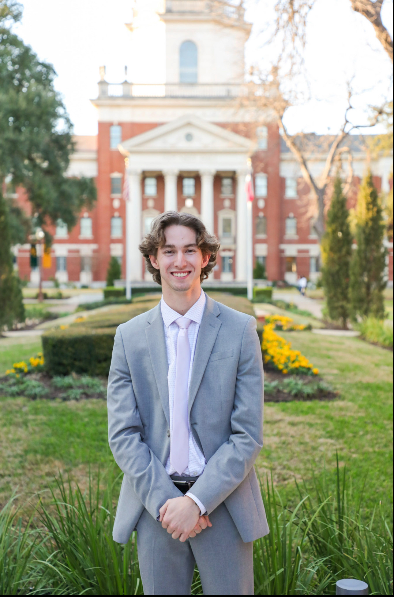

Zach Hayton
Co-Founder - Product & EngineeringFocused on the extension experience, signal design, API-backed review flows, and premium-ready product architecture.
LinkedInPRISM exists to make hidden perspectives visible. We are building tools that help readers slow down, ask better questions, and recognize when online content needs closer review.
PRISM is led by Zach Hayton and Casey McCabe, with a shared focus on a practical reliability layer for a web shaped by polarization, synthetic media, and fast-moving information.
Focused on the extension experience, signal design, API-backed review flows, and premium-ready product architecture.
LinkedIn
Focused on partnerships, funding, market positioning, and building PRISM into a credible platform for information integrity.
LinkedInPRISM placed second and received seed funding through Baylor's inaugural AI Venture Challenge.
The roadmap keeps PRISM focused: start with useful browser review, then expand into premium verification, reports, image provenance, and team workflows.
Inline highlights, reliability scoring, source cues, and API-backed review workflow testing.
Feedback loops, accuracy tuning, false-positive review, and extension polish with early users.
Source-backed verification, saved reports, shareable briefs, and image provenance workflows.
Classroom, newsroom, research, and organization workflows for repeatable reliability review.
We are looking for beta users, mission-aligned partners, educators, researchers, and supporters who care about clarity without turning the product into a partisan referee.